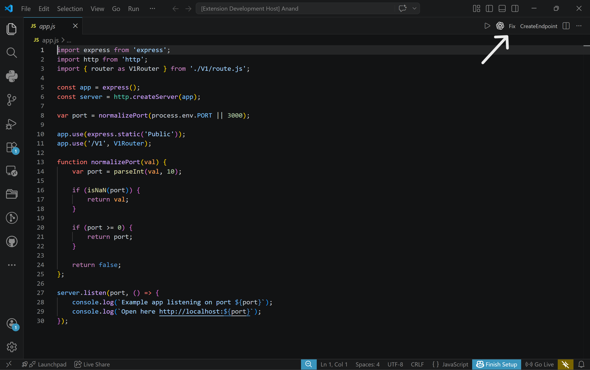

EndPointGen VS Code Extension
Overview
EndPointGen is a Visual Studio Code extension developed by KeshavSoft focused on AI-assisted server-side development using Node.js and Express.
Version 1.8.1
VS Code ^1.109.0
ES Modules
Untrusted Workspace Supported
Features
Generate Express.js API instantly
Create endpoints in app.js automatically
Add modular sub-routes in routes.js
Inject endpoint logic into .js files
Right-click Explorer integration
Clean modular architecture
Commands
| Command | Title | Description |
|---|---|---|
| extension.initJs | Initiate Node API | Creates base Express server |
| extension.createEndpoint | CreateEndpoint | Creates GET / POST route in app.js |
| extension.addSubRoute | AddSubRoute | Links router module in routes.js |
| extension.addEndPoint | AddEndPoint | Adds endpoint logic to js file |
Context Menu Integration

- Folders → Initiate Node API
- app.js → CreateEndpoint
- routes.js → AddSubRoute
- .js files → AddEndPoint
Fix App.js
Ensures app.js contains required Express configuration and route registrations.
- Fix missing middleware
- Connect routes automatically
- Repair broken structure
- Standardize project setup

Editor Title Bar Actions
Quick access buttons in VS Code editor top-right corner.

Fix
- Fix app.js structure
- Add middleware
- Connect routes
AddSubRoute
- Import router
- Register router
- Maintain modular structure
AddEndPoint
- Create GET endpoint
- Create POST endpoint
- Auto register route
New Feature – Editor Title Bar Actions (Top Right Buttons)
EndPointGen also provides quick access buttons in the VS Code editor title bar (top-right corner). These buttons allow you to create and manage endpoints without right-clicking in Explorer.

Available Title Bar Commands
Fix (Button)
Ensures app.js contains required Express configuration and route registrations.
Use when
- middleware missing
- routes not connected
- structure broken
- project copied from another repo
- app.js needs standard structure
How to use
- Open app.js
- Click Fix button (top right)
AddSubRoute
Registers a modular router inside routes.js.
Automatically
- imports router
- links router path
- keeps modular architecture
How to use
- Open routes.js
- Click AddSubRoute button (top right)
AddEndPoint
Creates a new Express route entry inside SubRoute.
Supports
- GET endpoint
- POST endpoint
- automatic route registration
How to use
- Open app.js
- Click AddEndPoint button (top right)
- Endpoint will be added automatically
Benefits
- Faster development
- Standard project structure
- Less manual coding
- Modular architecture
- Clean Express setup
- Works directly inside VS Code